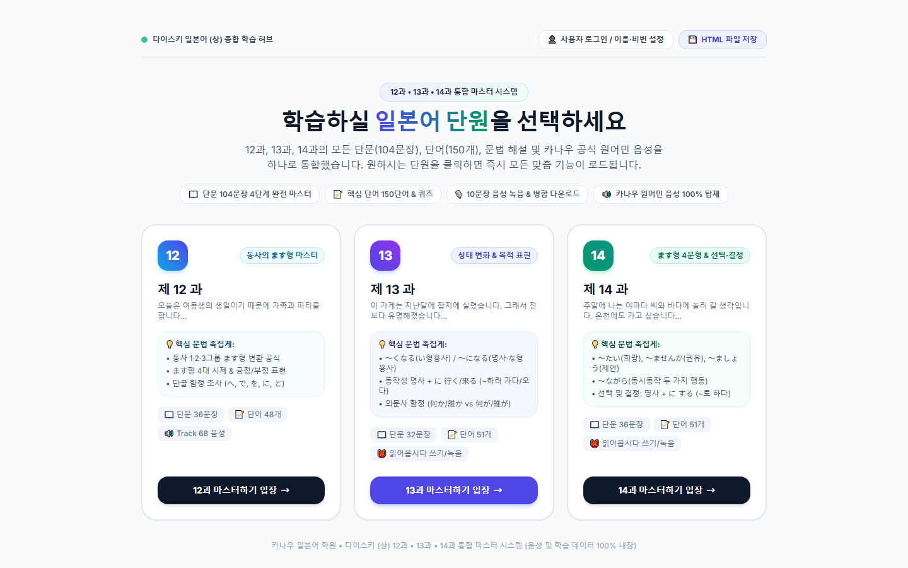

Projects
기획부터 AI 에이전트와 함께 직접 만든 시스템들입니다.
여러 나라 매장의 구글 비즈니스 프로필을 한 화면에서 — 이슈 자동 감지와 AI 리뷰 답변
2,400세대 아파트 입주민 셔틀의 예약·탑승·정산을 하나의 흐름으로
발주하면 운임이 자동으로 정해지고, 가장 먼저 수락한 차주와 바로 계약

교재 12~14과의 단어·문장·숙제·모의고사를 한 페이지에서 듣고 말하고 쓰며 익히기